Análisis de Diseños Experimentales
Introducción
En el capítulo de inferencia vimos como es el procedimiento estadístico para realizar comparaciones entre dos grupos independientes. Estos problemas también se puede ver como un diseño experimental de un factor con dos niveles, donde se tiene una variable respuesta que indica las medidas de interés y la variable dependiente corresponde al factor a evaluar con sus respectivos niveles.
suponga que el interés ahora es evaluar varios niveles de un solo factor, por ejemplo, la resistencia a la compresión del concreto en 5 días de curado.
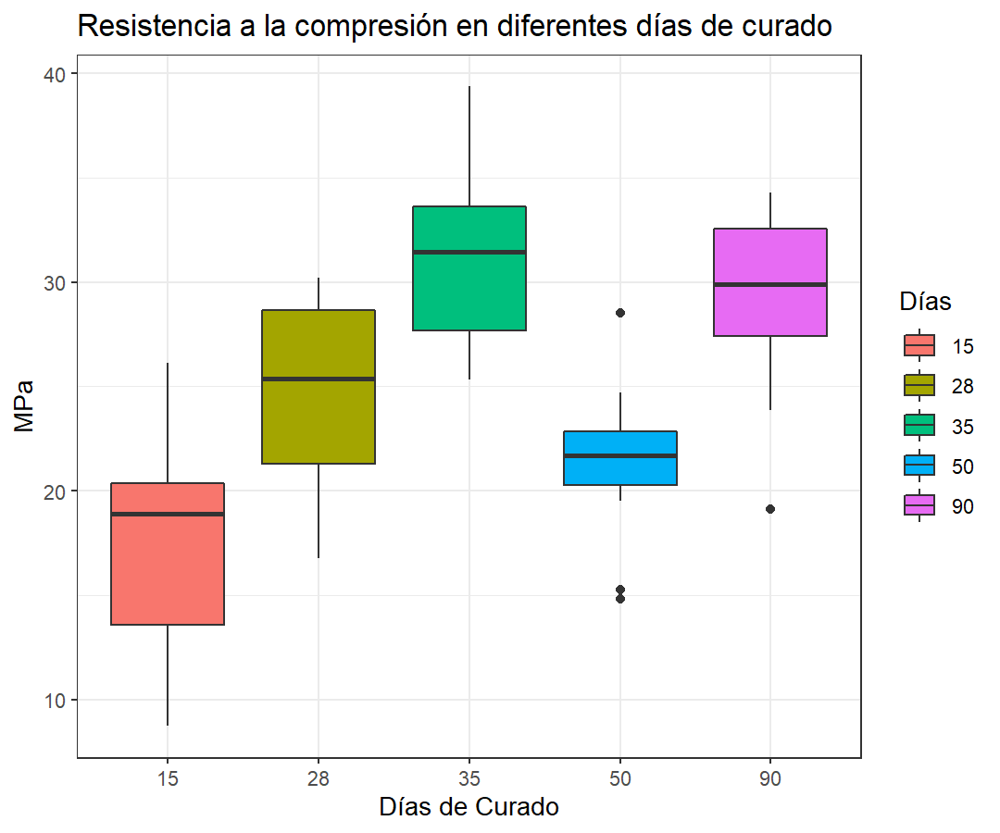
Esto significa que el planteamiento de las hipótesis a comparar son:
\[H_0: \mu_1=\mu_2=\mu_3=\mu_4=\mu_5\\ \text{vs}\\ H_a: \mu_1\neq\mu_2\neq\mu_3\neq\mu_4\neq\mu_5\]
En este caso los métodos de pruebas de hipótesis y de intervalos de confianza vistos no son suficientes para realizar múltiples comparaciones, esto se debe a que el Error tipo I aumenta considerablemente, ya que, la probabilidad \((1-\alpha)=0.95\) de aceptar la hipótesis nula para 5 casos se convierte en \(0.95^5\approx 0.77\). Esta situación se le conoce como el aumento de la tasa de descubrimientos falsos, como alterativa existe un método capaz de probar la hipótesis de igualdad de k medias con un solo estadístico de prueba el cual se denomina Análisis de Varianza (ANOVA).
Diseños completamente al azar
Es el más simple de todos los diseños, ya que el objetivo es comparar dos o más tratamientos y solo considera dos fuentes de variabilidad: los tratamientos y el error aleatorio. Se llama completamente al azar (DCA) porque todas las corridas se realizan en orden aleatorio completo con el fin de reducir los sesgos aleatorios y sistemáticos.
El análisis del diseño experimental se basa en resolver estadísticamente la siguiente ecuación:
\[\large y_{ij} = \mu+\tau_{i}+\varepsilon_{ij}\]
Donde \(y\) representa la variable respuesta, \(\mu\) es la media global ajustada o el promedio común a todos los tratamientos, \(\tau\) representa el factor con \(i\) niveles o tratamientos y \(\varepsilon\) representa el error aleatorio asociado al diseño experimental o atribuible a la medición. Este modelo se conoce como modelo de efectos fijos.
Notación de puntos
Antes de abordar los análisis de los datos para comparar tratamientos, conviene introducir la notación de puntos que simplifica las fórmulas para el análisis. Sirve para representar de manera abreviada cantidades numéricas que se pueden calcular a partir de los datos experimentales, donde \(Y_{ij}\) representa la j-ésima observación en el tratamiento i, con \(i = 1, 2, \dots, k\) y \(j = 1, 2, \dots, n_i\). Las cantidades de interés son las siguientes:
\(Y_i.=\) Suma de las observaciones del tratamiento i.
\(\bar{Y}_i.=\) Media de las observaciones del i-ésimo tratamiento.
\(Y.. =\) Suma total de las \(N = n1 + n2 + \dots + nk\) mediciones.
\(\bar{Y}..=\) Media global o promedio de todas las observaciones.
Note que el punto indica la suma sobre el correspondiente subíndice. Así, algunas relaciones válidas son, \[Y_i.=\sum_{j=1}^{n_i}Y_{ij}\quad \bar{Y}_i.=\frac{\sum_{j=1}^{n_i}Y_{ij}}{n_{i}}\quad Y..=\sum_{i=1}^{k}\sum_{j=1}^{n_i}Y_{ij}\quad \bar{Y}..=\frac{Y..}{N}\] Donde \(N=\sum_{i=1}^k n_i\) es el total de observaciones.
ANOVA
El objetivo del análisis de varianza en el DCA es probar la hipótesis de igualdad de los tratamientos con respecto a la media de la correspondiente variable de respuesta:
\[H_0: \mu_1=\mu_2=\dots=\mu_k=\mu\\ H_a: \mu_i \neq \mu_j \quad \text{para algún}\quad i \neq j\]
El cual se puede escribir de forma equivalente como:
\[H_0: \tau_1=\tau_2=\dots=\tau_k=0\\ H_a: \tau_i \neq 0 \quad \text{para algún}\quad i\]
Donde \(\tau_i\) es el efecto del tratamiento i sobre la variable de respuesta. Si se acepta \(H_0\) se confirma que los efectos sobre la respuesta de los k tratamientos son estadísticamente nulos (iguales a cero), y en caso de rechazar se estaría concluyendo que al menos un efecto es diferente de cero.
Para probar la hipótesis dada mediante la técnica de ANOVA, lo primero es descomponer la variabilidad total de los datos en sus dos componentes: la variabilidad debida a tratamientos y la que corresponde al error aleatorio, como se hace a continuación.
Una medida de la variabilidad total presente en las observaciones es la suma total de cuadrados dada por \[\begin{align*}SST=&\sum_{i=1}^k \sum_{j=1}^{n_i} (Y_{ij}-\bar{Y}..)^2\\ =&\sum_{i=1}^k \sum_{j=1}^{n_i} Y^2_{ij}-\frac{Y^2_{..}}{N}\\ =&\sum_{i=1}^k \sum_{j=1}^{n_i}\left[(Y_{ij}-\bar{Y}_i.)+(\bar{Y}_i.-\bar{Y}_{..})\right]^2\\ =&\sum_{i=1}^k n_i(\bar{Y}_i.-\bar{Y}_{..})^2+\sum_{i=1}^k \sum_{j=1}^{n_i}(Y_{ij}-\bar{Y}_i.)^2\\ =&SSB+SSE \end{align*}\] La \(SSB\) mide la variación o diferencias entre tratamientos. Mientras que la \(SSE\) mide la variación dentro de tratamientos.
Como hay un total de \(N\) observaciones, entonces \(SST\) tiene \(N-1\) grados de libertad. Hay \(k\) tratamientos o niveles de factor de interés, así que \(SSB\) tiene \(k-1\) grados de libertad, mientras que \(SSE\) tiene \(N-k\) grados de libertad, en términos de la ecuación de suma total de cuadrados, los grados de libertad son:
\[N-1=(k-1)+(N-k)\]
Las sumas de cuadrados divididas entre sus respectivos grados de libertad se llaman cuadrados medios. Los dos que más interesan son el cuadrado medio de los tratamientos y el error cuadrático medio, que se denotan por: \[MSB=\frac{SSB}{k-1}\qquad MSE=\frac{SSE}{N-k}\]
Los valores esperados de los cuadrados medios están dados por:
\[E\left[MSE\right]=\sigma^2 \qquad E\left[MSB\right]=\sigma^2+\frac{\sum_{i=1}^{k}n_i\tau_i^2}{N-k}\]
Cuando la hipótesis nula es verdadera ambos cuadrados estiman la varianza \(\sigma^2\). Con base a este hecho construye el estadístico de prueba de la siguiente manera:
\[\frac{SSB}{\sigma^2} \sim \chi^2_{k-1} \qquad \frac{SSE}{\sigma^2} \sim \chi^2_{N-k}\]
Entonces:
\[F_0=\cfrac{MSB}{MSE} \sim F_{(k-1,\,N-k)}\]
Para un \(\alpha\) dado, la Región Crítica es de la forma:
\[R.C: \{F_0 > F_{1-\alpha,\,(k-1,\,N-k)}\} \qquad V_p: P(F_{(k-1,\,N-k)} > F_0)\]
Tabla de la ANOVA
Todo el procedimiento se puede resumir en una tabla, la cual indica los pasos del cálculo para realizar la comparación de grupos en un DCA.
| Fuente de Variación | SS | gl | MS | F | valor-p |
|---|---|---|---|---|---|
| Tratamientos | \(SSB=\sum_{i=1}^{k}\frac{Y^2_i.}{n_i}-\frac{Y^2_{..}}{N}\) | \(k-1\) | \(MSB=\frac{SSB}{k-1}\) | \(\frac{MSB}{MSE}\) | \(P(F>F_0)\) |
| Error | \(SSE=SST-SSB\) | \(N-k\) | \(MSE=\frac{SSE}{N-k}\) | ||
| Total | \(SST=\sum_{i=1}^k\sum_{j=i}^{n_i} Y^2_{ij}-\frac{Y^2_{..}}{N}\) |
Validación de supuestos del modelo
La validez de los resultados obtenidos en cualquier análisis de varianza queda supeditado a que los supuestos del modelo se cumplan. Estos supuestos son: normalidad, varianza constante (igual varianza de los tratamientos) e independencia.
\[Y_{ij} = \mu + \tau_i + \varepsilon_{ij}\]
Cuando se realiza el ANOVA y da significativo, entonces se procede a estimar el modelo ajustado:
\[\hat{Y}_{ij}=\hat\mu+\hat\tau_i\]
Donde \(\hat Y\) indica la respuesta predicha, los demás estimadores representan el valor esperado de la media global y los tratamiento, el valor del término del error desaparece pues su valor esperado es igual a cero \(E[\varepsilon_{ij}]=0\). Como la media global se estima con \(\bar{Y}_{..}\) y el efecto del tratamiento con \(\bar{Y}_i.-\bar{Y}_{..}\), el modelo ajustado del DCA se puede escribir como:
\[\hat{Y}_{ij}=\bar{Y}_{..}+(\bar{Y}_i.-\bar{Y}_{..})=\bar{Y}_i.\]
Esto es, la respuesta predicha para cada observación es la media muestral del tratamiento correspondiente. De esta manera, el residual o residuo asociado a la observación \(Y_{ij}\) está dado por
\[e_{ij}=Y_{ij}-\hat{Y}_{ij}=Y_{ij}-\bar{Y}_i.\]
Los supuestos del modelo lineal, en términos de los residuos, son
- Los \(e_{ij}\) siguen una distribución normal con media cero.
- Los \(e_{ij}\) son independientes entre sí.
- Los residuos de cada tratamiento tienen la misma varianza \(\sigma^2\).
Estos supuestos se evaluan a través de pruebas de hipótesis, las más adecuadas para cada caso son:
- Test de Shapito-Wilks
- Test de Bartlett
- Test de Durbin-Watson
Pruebas Post-Hoc
Después de que se rechazó la hipótesis nula en un análisis de varianza y validaron los supuestos del modelo, es necesario ir a detalle y ver cuáles tratamientos son diferentes.
Método LSD
Una vez que se rechazó \(H_0\) en el ANOVA, el problema es probar la igualdad de todos los posibles pares de medias con la hipótesis:
\[H_0: \mu_i=\mu_j\\ H_1: \mu_i \neq \mu_j\]
Para $k4 tratamientos se tienen en total \(k(k – 1)/2\) pares de medias. Por ejemplo, si k = 4 existen 4 × 3/2 = 6 posibles pares de medias. El método de diferencia mínima significativa busca la diferencia mínima que debe existir entre dos medias muestrales para considerar que los tratamientos correspondientes son significativamente diferentes. Así, cada diferencia de medias muestrales en valor absoluto que sea mayor que el número LSD se declara significativa.
\[|\hat{Y}_i.-\hat{Y}_j.|>t_{(1-\alpha/2,\,N-k)}\sqrt{MSE \left(\frac{1}{n_i}+\frac{1}{n_j}\right)}=LSD\]
Si el diseño es balanceado, es decir, que los tamaños de muestra de cada tratamieno o nivel del factor es igual entonces:
\[LSD=t_{(1-\alpha/2,\,N-k)}\sqrt{\frac{2\times MSE}{n}}\]
Método Tukey
Un método más conservador para comparar pares de medias de tratamientos es el método de Tukey, el cual consiste en comparar las diferencias entre medias muestrales con el valor crítico dado por:
\[T_\alpha = q_{\alpha;(k,\,N-k)}\sqrt{\frac{MSE}{n_i}}\]
donde \(MSE\) es el error cuadrático medio, \(n\) es el número de observaciones por tratamiento, \(k\) es el número de tratamientos, \(N – k\) es igual a los grados de libertad para el error, \(\alpha\) es el nivel de significancia prefijado y el estadístico \(q_{\alpha;(k, N – k)}\) son puntos porcentuales de la distribución del rango estudentizado, que se obtienen de la tabla de rangos de Tukey.
Método Duncan
En este método para la comparación de medias, si las \(k\) muestras son de igual tamaño, los \(k\) promedios se acomodan en orden ascendente y el error estándar de los promedios se estima con \(S_{\bar{Y}_i.}=\sqrt{MSE/n}\). Si alguno o todos los tratamientos tienen tamaños diferentes, se reemplaza \(n\) por la media armónica de las \(\{n_i\}\), que está dada por:
\[n_{AR}=\cfrac{1}{\sum_{i=1}^k \frac{1}{n_i}}\]
Luego se obtienen los rangos de significancia mínima:
\[R_p=r_{\alpha\,(p,l)}\sqrt{\frac{MSE}{n}}\]
Los valores críticos de \(r_\alpha\) se obtienen de la tabla de rangos de Duncan. Las diferencias observadas entre las medias muestrales se comparan con los rangos \(R_p\) de la siguiente manera: primero se compara la diferencia entre la media más grande y la más pequeña con el rango \(R_k\). Luego, la diferencia entre la media más grande y la segunda más pequeña se compara con el rango \(R_{k – 1}\). Estas comparaciones continúan hasta que la media mayor se haya comparado con todas las demás. Luego se repite el procedimiento fijando \(R_{k – 1}\) para compararlas con las demás, así sucesivamente hasta comparar los \(k(k-1)/2\) pares de medias. En las comparaciones donde la diferencia observada es mayor que el rango respectivo, se concluye que esas medias son significativamente diferentes.
Método Dunnet
Una vez que se rechaza \(H_0\) con el ANOVA, en ocasiones uno de los \(k\) tratamientos a comparar es el llamado tratamiento control y el interés fundamental es comparar los \(k – 1\) tratamientos restantes con dicho control.
\[|\hat{Y}_i.-\hat{Y}_k.|> D_{\alpha\,(k-1,N-k)}\sqrt{MSE \left(\frac{1}{n_i}+\frac{1}{n_k}\right)}\]
Donde \(i=1,2,\dots,k-1\) y \(D_\alpha\) son los valores de la tabla de Dunnet con los respectivos grados de libertad.
Ejemplo 1
Un equipo de mejora investiga el efecto de cuatro métodos de ensamble A, B, C y D, sobre el tiempo de ensamble en minutos. En primera instancia, la estrategia experimental es aplicar cuatro veces los cuatro métodos de ensamble en orden completamente aleatorio (las 16 pruebas en orden aleatorio). Si se usa el diseño completamente al azar (DCA), se supone que, además del método de ensamble, no existe ningún otro factor que influya de manera significativa sobre la variable de respuesta (tiempo de ensamble). Los tiempos de ensamble obtenidos son:
| A | B | C | D |
|---|---|---|---|
| 6 | 7 | 11 | 10 |
| 8 | 9 | 16 | 12 |
| 7 | 10 | 11 | 11 |
| 8 | 8 | 13 | 9 |
El modelo a evaluar es:
\[y_{ij}=\mu+\tau_i+\varepsilon_{ij}\qquad \varepsilon_{ij}\sim N(0,\sigma^2)\]
Utilizando R el análisis estadístico de este diseño experimental es sencillo. Los pasos a seguir son los siguientes:
- Cargar/Construir la base de datos con la información de interés.
- Realizar un análisis descriptivo de la información.
- Ajustar el modelo a través del ANOVA.
- Validar los supuestos del modelo.
- Realizar las pruebas post-hoc.
Necesitamos las siguientes librerías.
# Para gráficos con estilo
require(ggplot2)
# Para manejar bases de datos
require(dplyr)
# Para construir los qq-plots
require(car)
# Para las pruebas de normalidad
require(nortest)
# Para las pruebas post-hoc
require(agricolae)
require(multcomp)El primer paso es cargar o construir la base de datos, esto puede hacerse en excel y luego importarlas a R o se puede construir la base de datos de la siguiente forma:
ejm1 <- data.frame(respuesta=c(6,7,11,10,
8,9,16,12,
7,10,11,11,
8,8,13,9),
tratamientos=rep(LETTERS[1:4],4),
stringsAsFactors = T)
# Verificar la tabla de datos
unstack(ejm1)## A B C D
## 1 6 7 11 10
## 2 8 9 16 12
## 3 7 10 11 11
## 4 8 8 13 9Los análisis descriptivos sirven para evaluar visualmente si existe un posible efecto del tratamiento en la variable respuesta, el mejor candidato para esta tarea es el BoxPlot.
# con Base
with(ejm1,boxplot(respuesta~tratamientos,las=1,col=2:5,
main="Diagrama de Cajas y Bigotes"))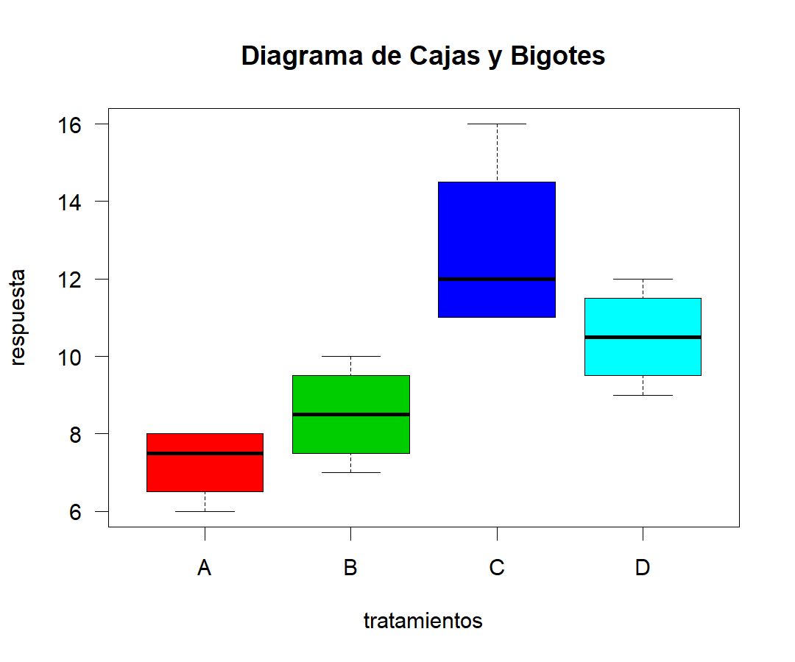
# con ggplot
ggplot(ejm1,aes(x=tratamientos,y=respuesta,fill=tratamientos))+
geom_boxplot()+ggtitle("Diagrama de Cajas y Bigotes")+
theme_bw()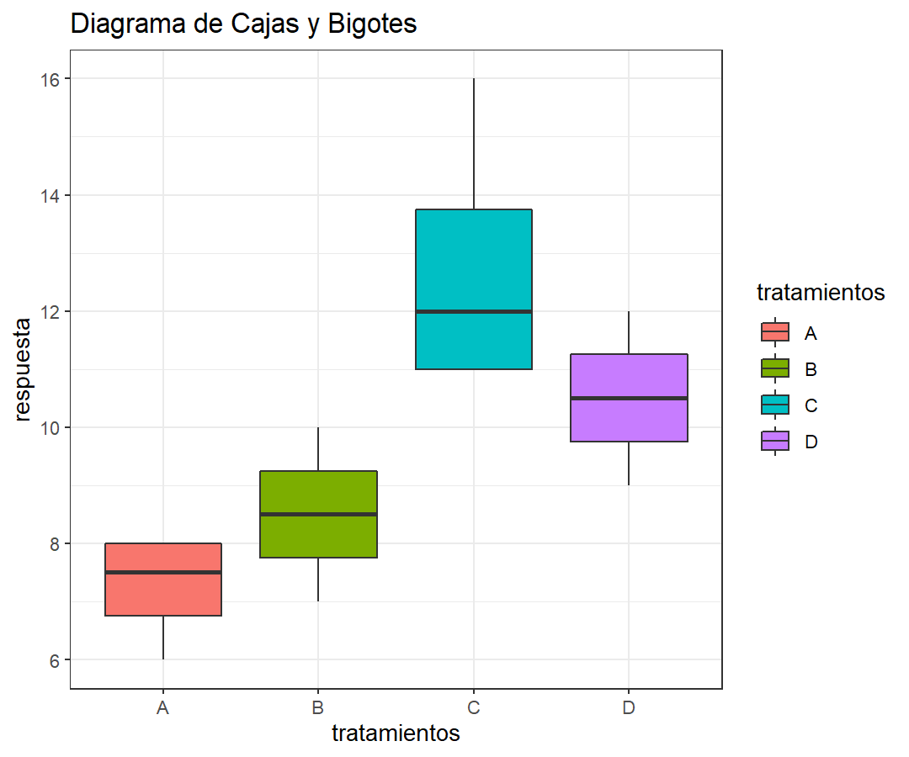
Luego se construye el modelo con el comando aov dando como argumentos la fórmula, después se ejecuta el comando anova para construir la tabla e interpretar.
# Anova
fit <- aov(respuesta~tratamientos,data = ejm1)
(anvar <- anova(fit))## Analysis of Variance Table
##
## Response: respuesta
## Df Sum Sq Mean Sq F value Pr(>F)
## tratamientos 3 69.5 23.1667 9.4237 0.001771 **
## Residuals 12 29.5 2.4583
## ---
## Signif. codes: 0 '***' 0.001 '**' 0.01 '*' 0.05 '.' 0.1 ' ' 1Por defecto la tabla ANOVA trae unos códigos de significancia de acuerdo al nivel \(\alpha\) seleccionado por el investigador, para este caso nos dice que el valor-p es mucho menor a 0.01, si elegimos un \(\alpha=0.05\) entonces se rechaza la hipótesis nula, es decir, existen diferencias significativas entre los tramientos del modelo.
Como el modelo es significativo, entonces es necesario validar los supuestos del modelo antes de realizar las pruebas post-hoc.
# normalidad
par(mfrow=c(1,2))
qqnorm(fit$residuals,pch=19,las=1)
qqline(fit$residuals)
qqPlot(fit$residuals,pch=19,main="Normal Q-Q Plot",las=1)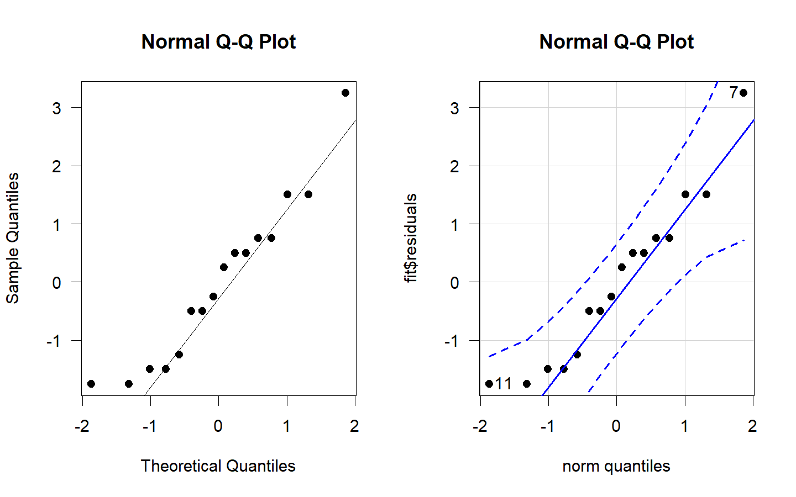
## [1] 7 11shapiro.test(fit$residuals)##
## Shapiro-Wilk normality test
##
## data: fit$residuals
## W = 0.93389, p-value = 0.2808ad.test(fit$residuals)##
## Anderson-Darling normality test
##
## data: fit$residuals
## A = 0.34655, p-value = 0.435lillie.test(fit$residuals)##
## Lilliefors (Kolmogorov-Smirnov) normality test
##
## data: fit$residuals
## D = 0.12613, p-value = 0.7108Se cumple el supuesto de normalidad dado que no se rechaza la hipótesis nula.
# independecia
plot(fit$residuals,pch=19,las=1,type="b",
main="Independencia")
abline(h=0,lty=2,col=2)
durbinWatsonTest(fit)## lag Autocorrelation D-W Statistic p-value
## 1 0.2415254 1.387712 0.372
## Alternative hypothesis: rho != 0Se cumple el supuesto de independencia ya que no se halla autocorrelación en los errores del modelo.
# Homocedasticidad
bartlett.test(fit$residuals,ejm1$tratamientos)##
## Bartlett test of homogeneity of variances
##
## data: fit$residuals and ejm1$tratamientos
## Bartlett's K-squared = 2.4853, df = 3, p-value = 0.4779De acuerdo a los resultados no existe diferencias de varianza entre los grupos, es decir, hay homcedasticidad u homogeneidad de varianzas.
# Supuestos globales
plot(fit,pch=19,las=1) 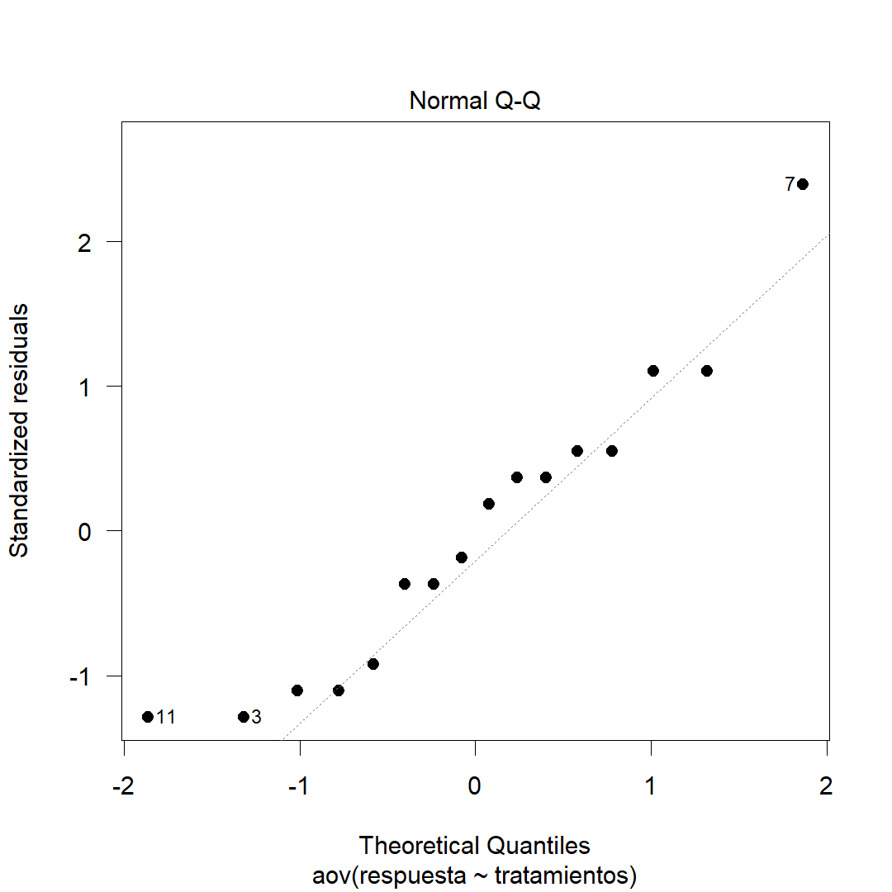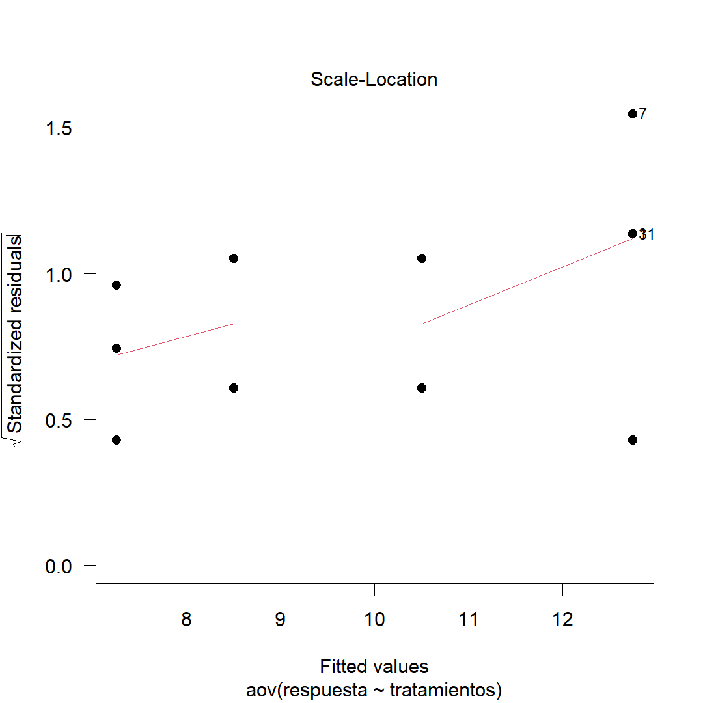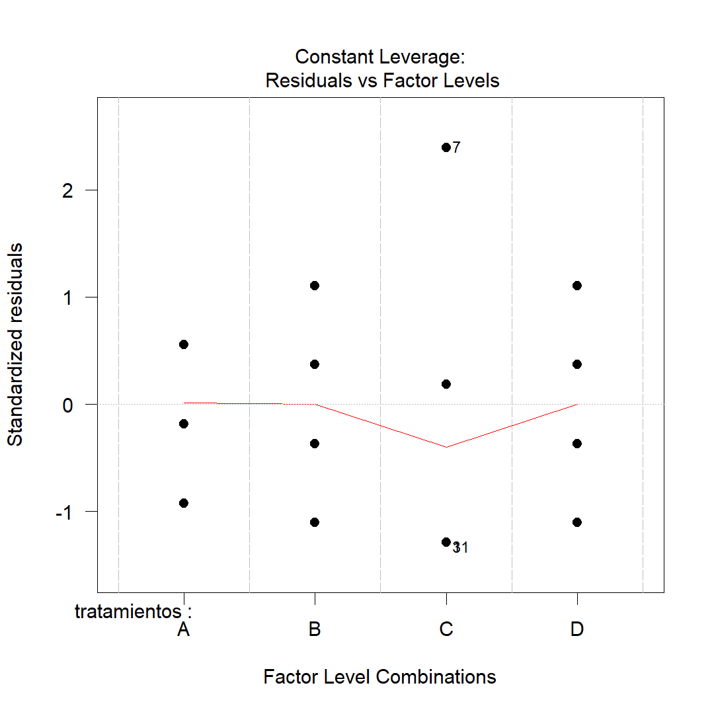
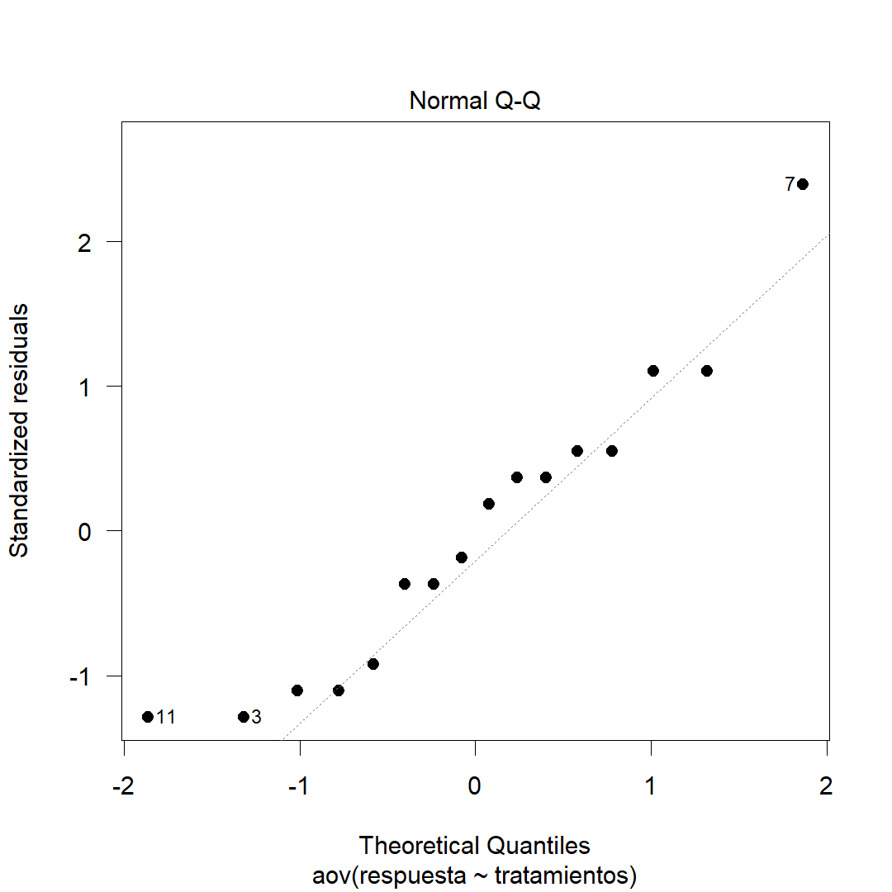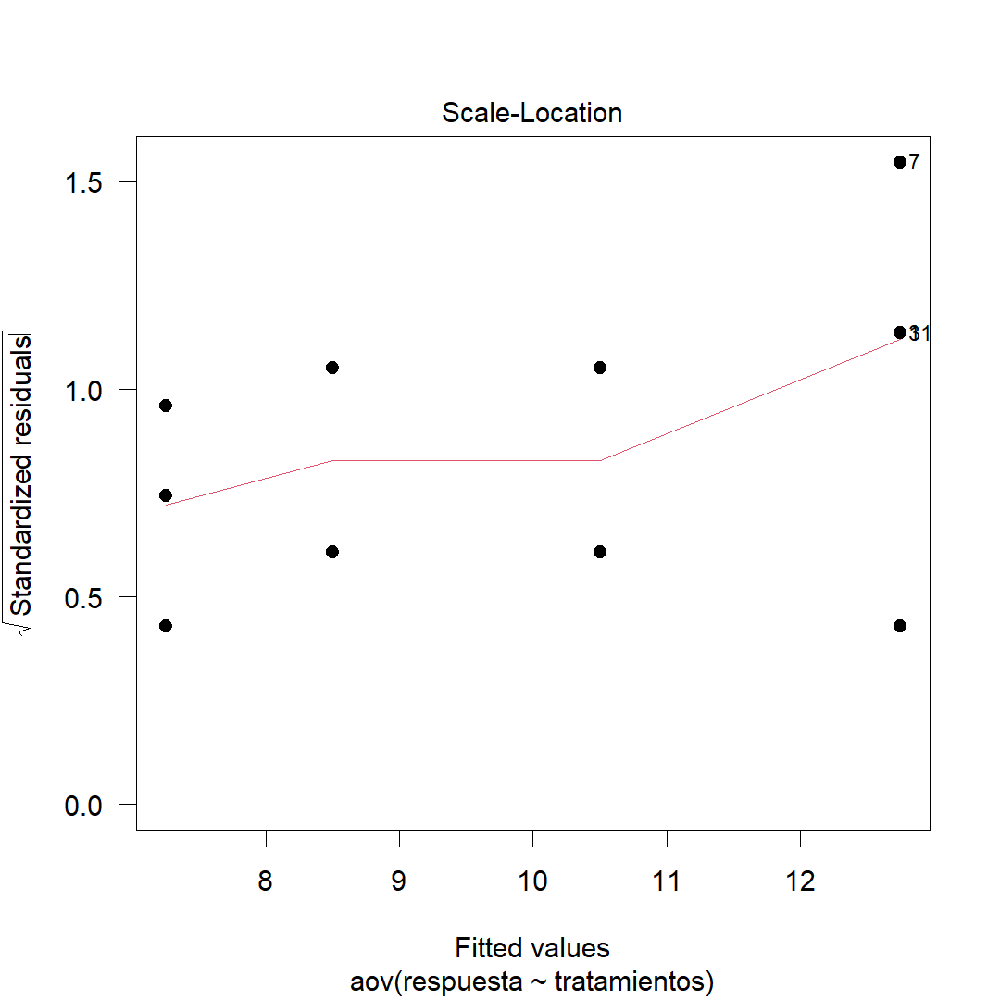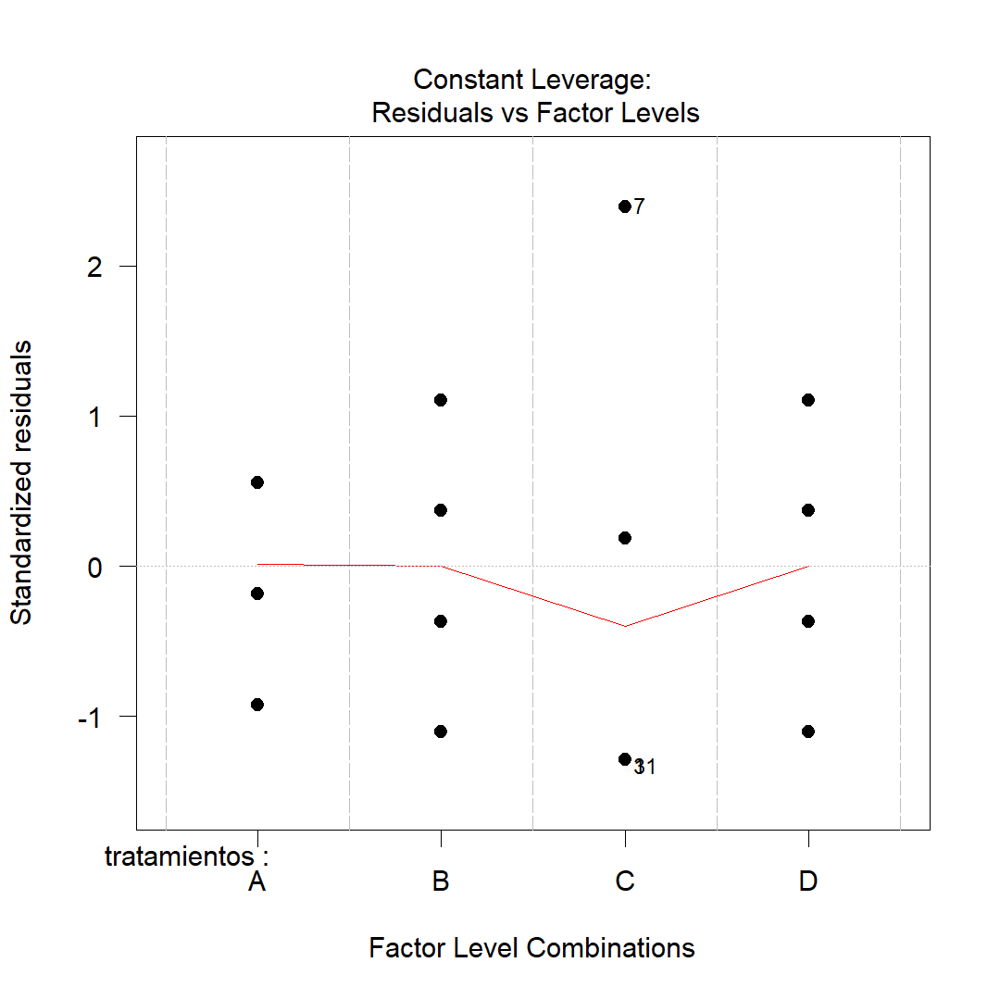
Finalmente, como los supuestos del modelo se cumplen, entonces podemos buscar cuáles son los tratamientos más significativos sobre los tiempos de ensamble mediante las pruebas post-hoc
#### Pruebas post-hoc ####
# LSD
lsd <- LSD.test(y = fit,trt = "tratamientos",console = T)##
## Study: fit ~ "tratamientos"
##
## LSD t Test for respuesta
##
## Mean Square Error: 2.458333
##
## tratamientos, means and individual ( 95 %) CI
##
## respuesta std r LCL UCL Min Max
## A 7.25 0.9574271 4 5.541912 8.958088 6 8
## B 8.50 1.2909944 4 6.791912 10.208088 7 10
## C 12.75 2.3629078 4 11.041912 14.458088 11 16
## D 10.50 1.2909944 4 8.791912 12.208088 9 12
##
## Alpha: 0.05 ; DF Error: 12
## Critical Value of t: 2.178813
##
## least Significant Difference: 2.415602
##
## Treatments with the same letter are not significantly different.
##
## respuesta groups
## C 12.75 a
## D 10.50 ab
## B 8.50 bc
## A 7.25 cplot(lsd,las=1);grid()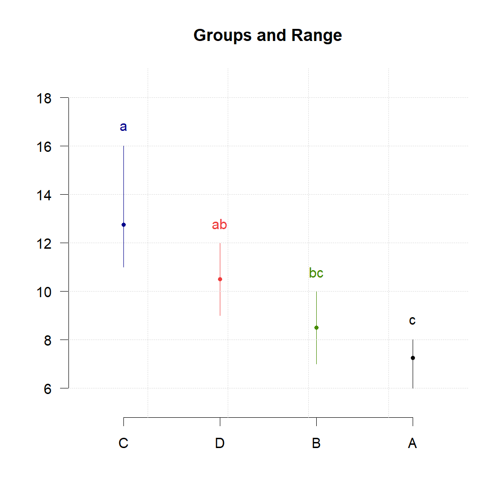
# Tukey HSD
(hsd <- TukeyHSD(fit))## Tukey multiple comparisons of means
## 95% family-wise confidence level
##
## Fit: aov(formula = respuesta ~ tratamientos, data = ejm1)
##
## $tratamientos
## diff lwr upr p adj
## B-A 1.25 -2.04155503 4.541555 0.6804513
## C-A 5.50 2.20844497 8.791555 0.0016206
## D-A 3.25 -0.04155503 6.541555 0.0533380
## C-B 4.25 0.95844497 7.541555 0.0110423
## D-B 2.00 -1.29155503 5.291555 0.3181239
## D-C -2.25 -5.54155503 1.041555 0.2309373plot(hsd,las=1)
# Duncan
duncan.test(y = fit,trt = "tratamientos",console = T,group = F)##
## Study: fit ~ "tratamientos"
##
## Duncan's new multiple range test
## for respuesta
##
## Mean Square Error: 2.458333
##
## tratamientos, means
##
## respuesta std r Min Max
## A 7.25 0.9574271 4 6 8
## B 8.50 1.2909944 4 7 10
## C 12.75 2.3629078 4 11 16
## D 10.50 1.2909944 4 9 12
##
## Comparison between treatments means
##
## difference pvalue signif. LCL UCL
## A - B -1.25 0.2816 -3.6656016 1.1656016
## A - C -5.50 0.0005 *** -8.0968097 -2.9031903
## A - D -3.25 0.0158 * -5.7784415 -0.7215585
## B - C -4.25 0.0031 ** -6.7784415 -1.7215585
## B - D -2.00 0.0964 . -4.4156016 0.4156016
## C - D 2.25 0.0652 . -0.1656016 4.6656016# Dunnet
Dunnett.mc <- glht(fit,linfct=mcp(tratamientos = "Dunnett"))
summary(Dunnett.mc)##
## Simultaneous Tests for General Linear Hypotheses
##
## Multiple Comparisons of Means: Dunnett Contrasts
##
##
## Fit: aov(formula = respuesta ~ tratamientos, data = ejm1)
##
## Linear Hypotheses:
## Estimate Std. Error t value Pr(>|t|)
## B - A == 0 1.250 1.109 1.127 0.5558
## C - A == 0 5.500 1.109 4.961 <0.001 ***
## D - A == 0 3.250 1.109 2.931 0.0319 *
## ---
## Signif. codes: 0 '***' 0.001 '**' 0.01 '*' 0.05 '.' 0.1 ' ' 1
## (Adjusted p values reported -- single-step method)plot(Dunnett.mc)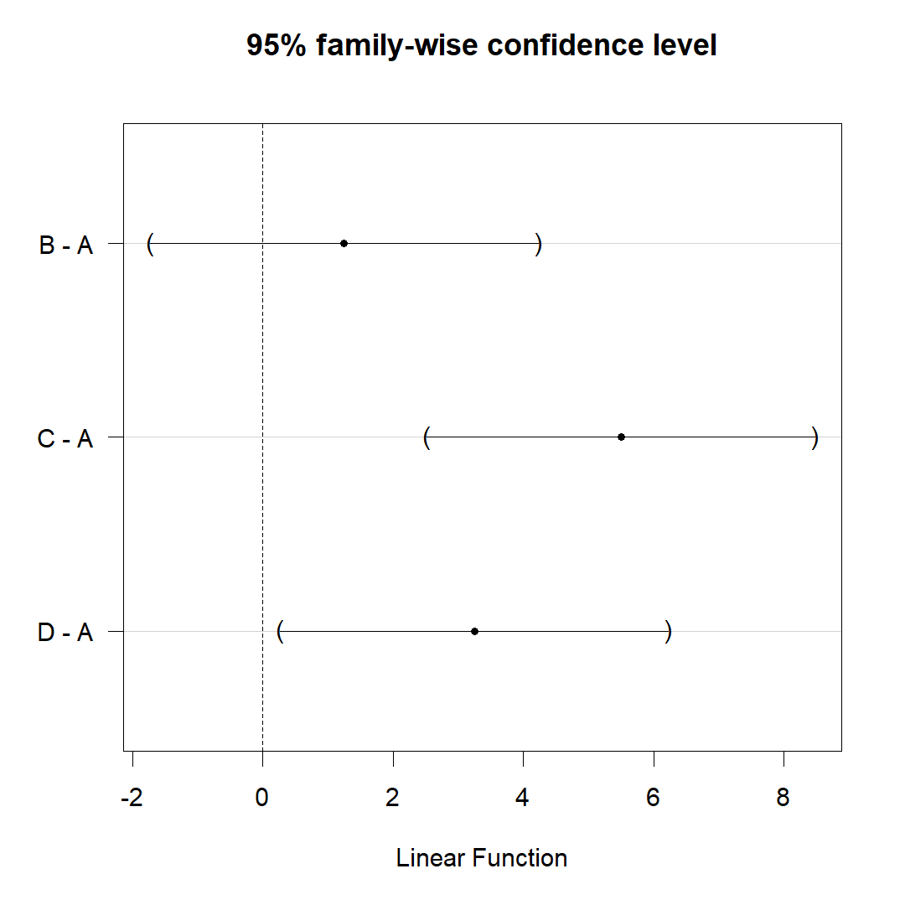
Ejemplo 2
Un fabricante de calzado desea mejorar la calidad de las suelas, las cuales se pueden hacer con uno de los cuatro tipos de cuero A, B, C y D disponibles en el mercado. Para ello, prueba los cueros con una máquina que hace pasar los zapatos por una superficie abrasiva; la suela de éstos se desgasta al pasarla por dicha superficie. Como criterio de desgaste se usa la pérdida de peso después de un número fijo de ciclos. Se prueban en orden aleatorio 24 zapatos, seis de cada tipo de cuero. Al hacer las pruebas en orden completamente al azar se evitan sesgos y las mediciones en un tipo de cuero resultan independientes de las demás. Los datos (en miligramos) sobre el desgaste de cada tipo de cuero se muestran a continuación.
| A | B | C | D |
|---|---|---|---|
| 264 | 208 | 220 | 217 |
| 260 | 220 | 263 | 226 |
| 258 | 216 | 219 | 215 |
| 241 | 200 | 225 | 227 |
| 262 | 213 | 230 | 220 |
| 255 | 206 | 228 | 222 |
El modelo a evaluar es:
\[y_{ij}=\mu+\tau_i+\varepsilon_{ij}\qquad \varepsilon_{ij}\sim N(0,\sigma^2)\]
Utilizando R el análisis estadístico de este diseño experimental es sencillo. Los pasos a seguir son los siguientes:
- Cargar/Construir la base de datos con la información de interés.
ejm2 <- data.frame(respuesta=c(264,208,220,217,
260,220,263,226,
258,216,219,215,
241,200,225,227,
262,213,230,220,
255,206,228,222),
tratamientos=rep(LETTERS[1:4],6),
stringsAsFactors = T)
# Verificar la tabla de datos
unstack(ejm2)## A B C D
## 1 264 208 220 217
## 2 260 220 263 226
## 3 258 216 219 215
## 4 241 200 225 227
## 5 262 213 230 220
## 6 255 206 228 222- Realizar un análisis descriptivo de la información.
ggplot(ejm2,aes(x=tratamientos,y=respuesta,fill=tratamientos))+
geom_boxplot()+ggtitle("Diagrama de Cajas y Bigotes")+
theme_bw()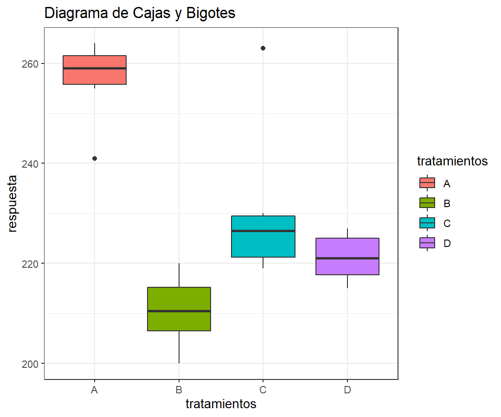
- Ajustar el modelo a través del ANOVA.
# Anova
fit2 <- aov(respuesta~tratamientos,data = ejm2)
anova(fit2)## Analysis of Variance Table
##
## Response: respuesta
## Df Sum Sq Mean Sq F value Pr(>F)
## tratamientos 3 7019.5 2339.82 22.755 1.176e-06 ***
## Residuals 20 2056.5 102.83
## ---
## Signif. codes: 0 '***' 0.001 '**' 0.01 '*' 0.05 '.' 0.1 ' ' 1- Validar los supuestos del modelo.
# normalidad
par(mfrow=c(1,2))
qqnorm(fit2$residuals,pch=19,las=1)
qqline(fit2$residuals)
qqPlot(fit2$residuals,pch=19,main="Normal Q-Q Plot",las=1)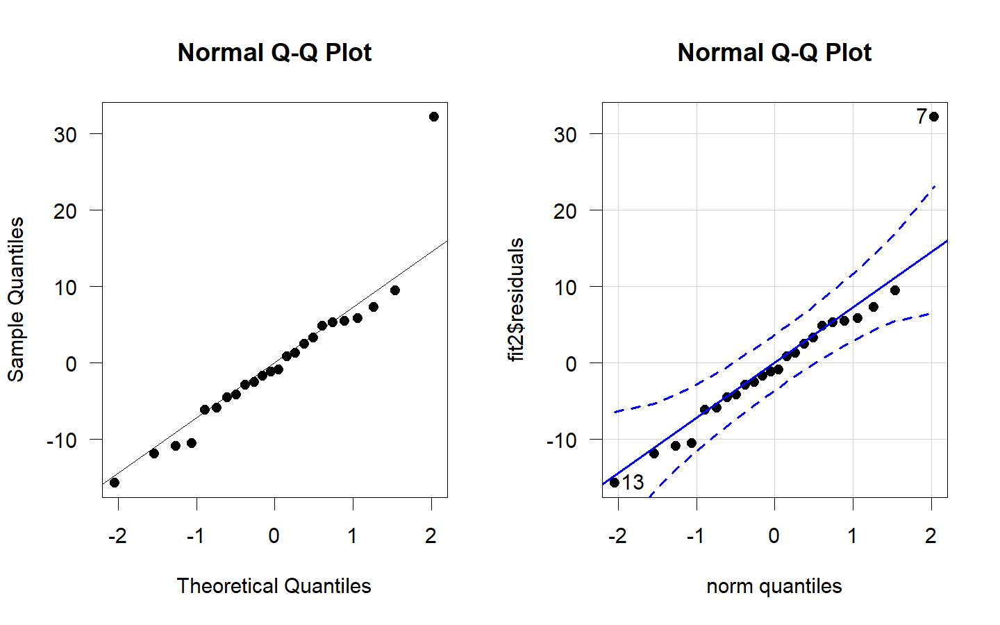
## [1] 7 13shapiro.test(fit2$residuals)##
## Shapiro-Wilk normality test
##
## data: fit2$residuals
## W = 0.88326, p-value = 0.00967ad.test(fit2$residuals)##
## Anderson-Darling normality test
##
## data: fit2$residuals
## A = 0.64761, p-value = 0.08005lillie.test(fit2$residuals)##
## Lilliefors (Kolmogorov-Smirnov) normality test
##
## data: fit2$residuals
## D = 0.14365, p-value = 0.2256¿Los residuales del modelo distribuyen normalmente?
# independecia
plot(fit2$residuals,pch=19,las=1,type="b",
main="Independencia")
abline(h=0,lty=2,col=2)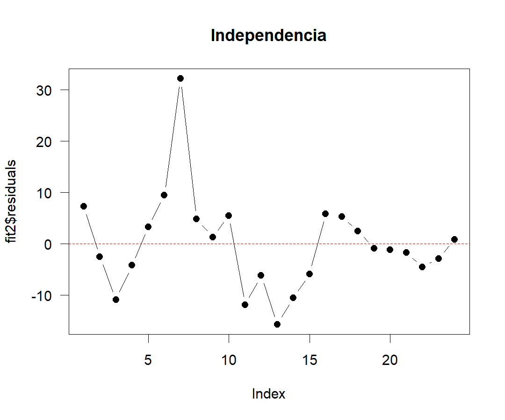
durbinWatsonTest(fit2)## lag Autocorrelation D-W Statistic p-value
## 1 0.4405003 1.092512 0.034
## Alternative hypothesis: rho != 0¿Existe independencia en los residuales del modelo?
# Homocedasticidad
bartlett.test(fit2$residuals,ejm2$tratamientos)##
## Bartlett test of homogeneity of variances
##
## data: fit2$residuals and ejm2$tratamientos
## Bartlett's K-squared = 7.4634, df = 3, p-value = 0.05851¿Se cumple el modelo de homocedasticidad?
# Supuestos globales
plot(fit2,pch=19,las=1)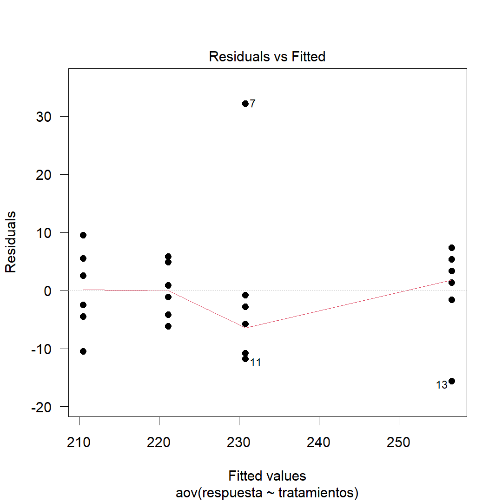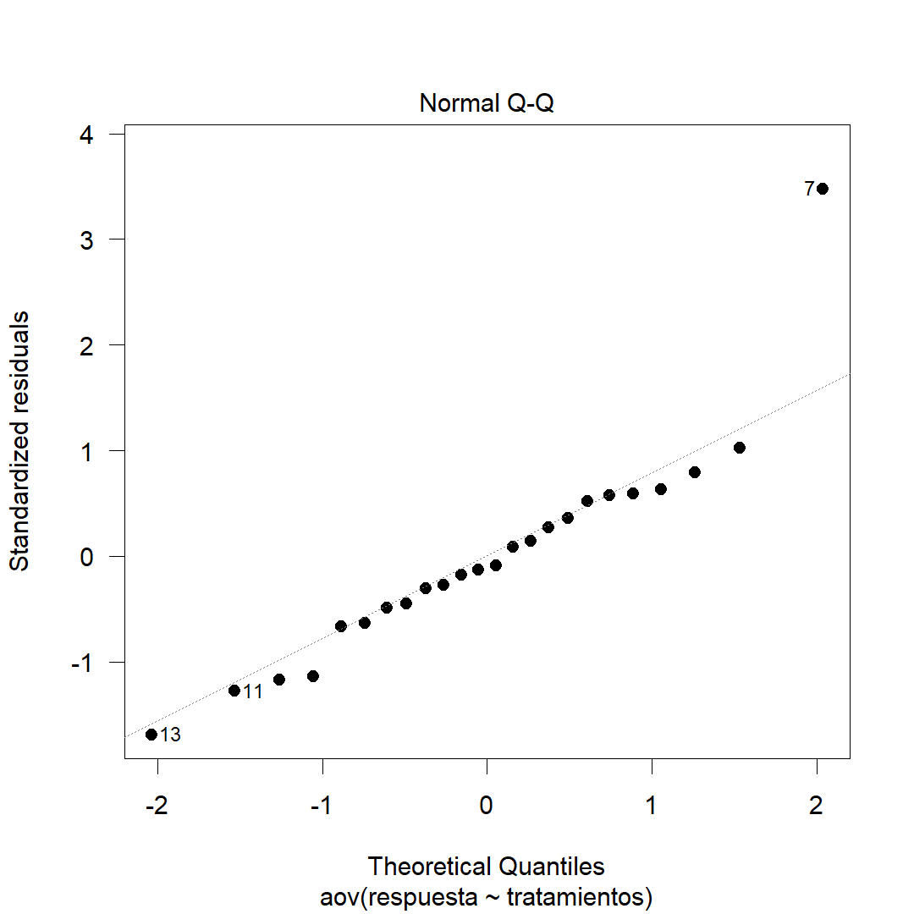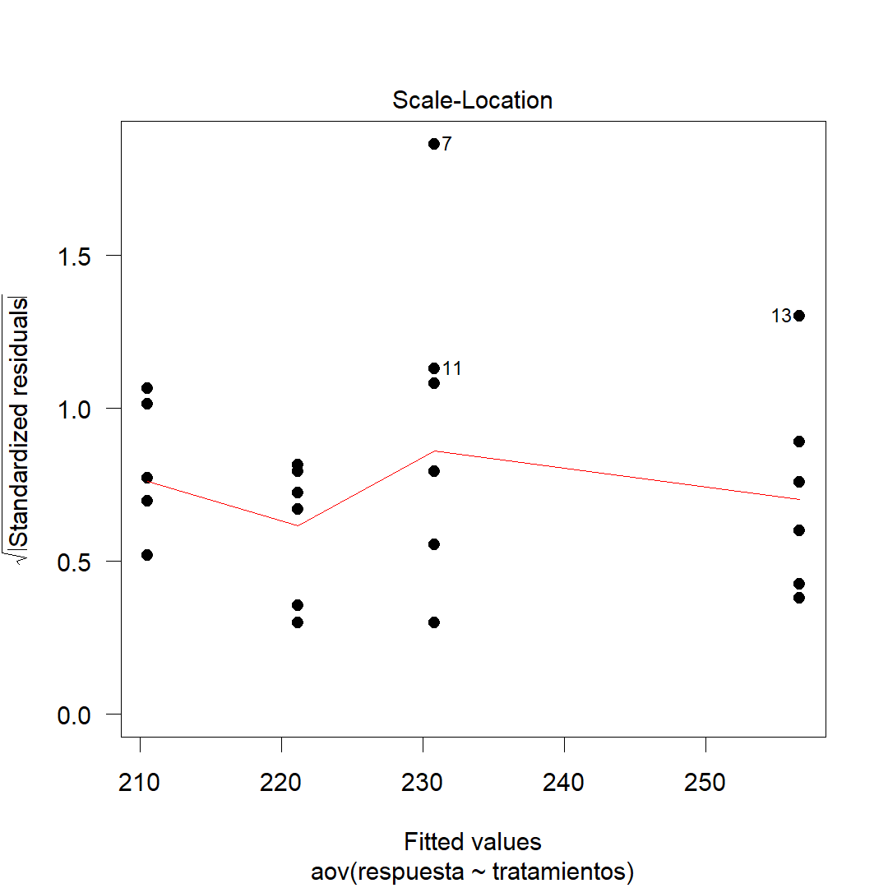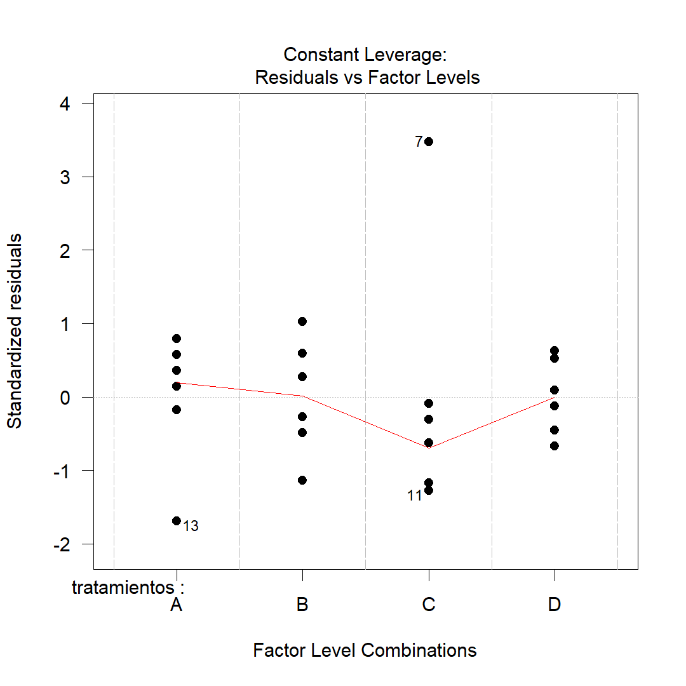
- Realizar las pruebas post-hoc.
#### Pruebas post-hoc ####
# LSD
lsd <- LSD.test(y = fit2,trt = "tratamientos",console = T)##
## Study: fit2 ~ "tratamientos"
##
## LSD t Test for respuesta
##
## Mean Square Error: 102.825
##
## tratamientos, means and individual ( 95 %) CI
##
## respuesta std r LCL UCL Min Max
## A 256.6667 8.286535 6 248.0313 265.3020 241 264
## B 210.5000 7.259477 6 201.8646 219.1354 200 220
## C 230.8333 16.339115 6 222.1980 239.4687 219 263
## D 221.1667 4.792355 6 212.5313 229.8020 215 227
##
## Alpha: 0.05 ; DF Error: 20
## Critical Value of t: 2.085963
##
## least Significant Difference: 12.21224
##
## Treatments with the same letter are not significantly different.
##
## respuesta groups
## A 256.6667 a
## C 230.8333 b
## D 221.1667 bc
## B 210.5000 cplot(lsd,las=1);grid()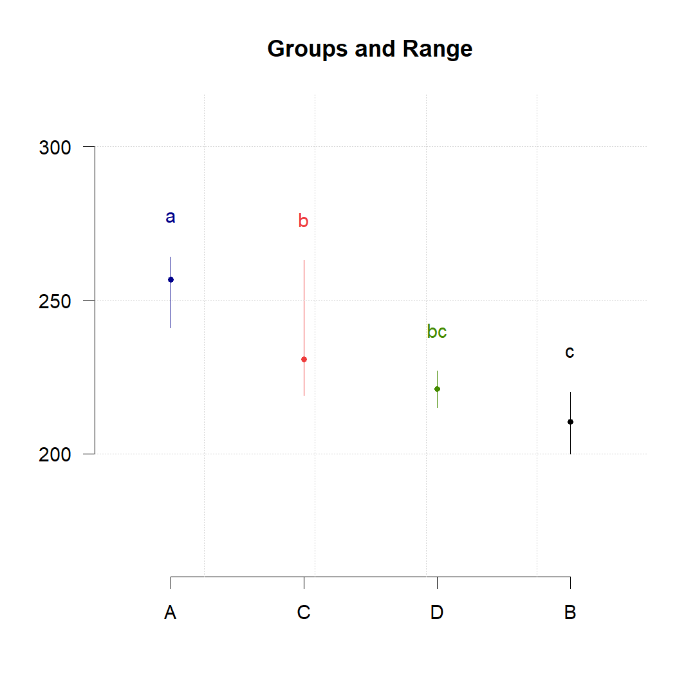
# Tukey HSD
(hsd <- TukeyHSD(fit2))## Tukey multiple comparisons of means
## 95% family-wise confidence level
##
## Fit: aov(formula = respuesta ~ tratamientos, data = ejm2)
##
## $tratamientos
## diff lwr upr p adj
## B-A -46.166667 -62.552998 -29.780336 0.0000008
## C-A -25.833333 -42.219664 -9.447002 0.0014117
## D-A -35.500000 -51.886331 -19.113669 0.0000349
## C-B 20.333333 3.947002 36.719664 0.0118160
## D-B 10.666667 -5.719664 27.052998 0.2926431
## D-C -9.666667 -26.052998 6.719664 0.3742863plot(hsd,las=1)
# Duncan
duncan.test(y = fit2,trt = "tratamientos",console = T,group = F)##
## Study: fit2 ~ "tratamientos"
##
## Duncan's new multiple range test
## for respuesta
##
## Mean Square Error: 102.825
##
## tratamientos, means
##
## respuesta std r Min Max
## A 256.6667 8.286535 6 241 264
## B 210.5000 7.259477 6 200 220
## C 230.8333 16.339115 6 219 263
## D 221.1667 4.792355 6 215 227
##
## Comparison between treatments means
##
## difference pvalue signif. LCL UCL
## A - B 46.166667 0.0000 *** 32.962466 59.370868
## A - C 25.833333 0.0003 *** 13.621091 38.045575
## A - D 35.500000 0.0000 *** 22.681249 48.318751
## B - C -20.333333 0.0032 ** -33.152084 -7.514582
## B - D -10.666667 0.0835 . -22.878909 1.545575
## C - D 9.666667 0.1143 -2.545575 21.878909# Dunnet
Dunnett.mc <- glht(fit2,linfct=mcp(tratamientos = "Dunnett"))
summary(Dunnett.mc)##
## Simultaneous Tests for General Linear Hypotheses
##
## Multiple Comparisons of Means: Dunnett Contrasts
##
##
## Fit: aov(formula = respuesta ~ tratamientos, data = ejm2)
##
## Linear Hypotheses:
## Estimate Std. Error t value Pr(>|t|)
## B - A == 0 -46.167 5.854 -7.886 < 1e-04 ***
## C - A == 0 -25.833 5.854 -4.413 0.000633 ***
## D - A == 0 -35.500 5.854 -6.064 < 1e-04 ***
## ---
## Signif. codes: 0 '***' 0.001 '**' 0.01 '*' 0.05 '.' 0.1 ' ' 1
## (Adjusted p values reported -- single-step method)plot(Dunnett.mc,xlim = c(-60,0))